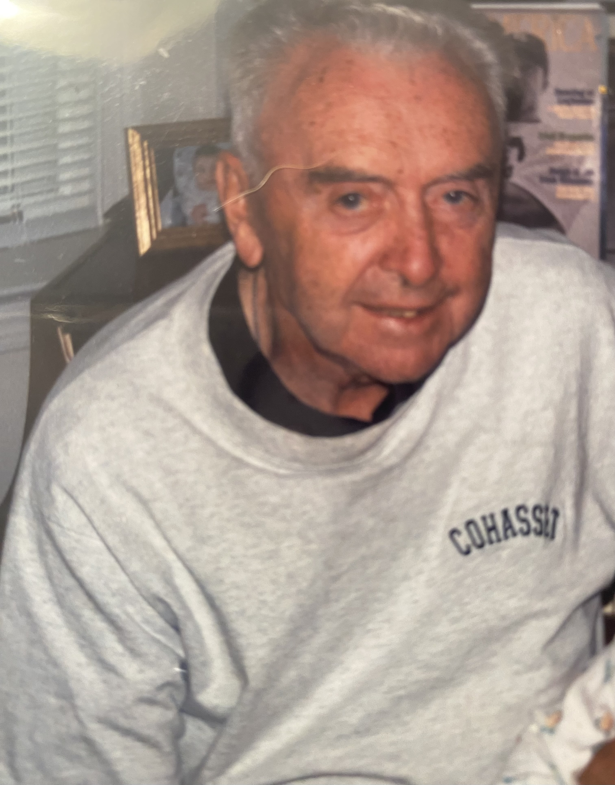

Francis (Franny) Brennan was a loving brother, son, father, and grandfather.
But most importantly, he was an entertainer. As the last of 17 grandchildren my time with pop pop was relatively brief. However,
it is impossible to forget the sound of his rickety, extraordinarily out of tune piano. He particularly loved
to play it right after Grandmom would say "don't rile the kids up!" I'm not sure he ever listened. For one of
pop pops birthdays, he was given the gift of being able to record some of his Piano Ramblings in a real studio. These
are some of my favorite things to listen to now, as they never fail to bring a smile to my face. I
created this website as a way to preserve these recordings as I don't want them to get lost in the digital
age. Hopefully you enjoy listening as much as I often do.
